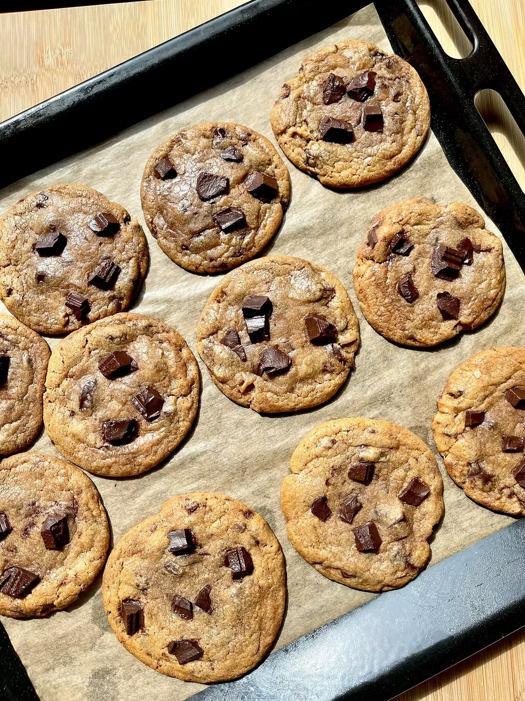

Recette des Cookies

Ingrédients :
- 250 g de farine
- 125 g de beurre mou
- 100 g de sucre roux
- 50 g de sucre blanc
- 1 œuf
- 1 cuillère à café d'extrait de vanille
- 1/2 sachet de levure chimique
- 1 pincée de sel
- 150 g de pépites de chocolat
Préparation :
- Préchauffez le four à 180°C (th.6).
- Dans un saladier, mélangez le beurre mou avec les sucres jusqu’à obtention d’un mélange crémeux.
- Ajoutez l'œuf et l’extrait de vanille, puis mélangez bien.
- Incorporez la farine, la levure et le sel petit à petit.
- Ajoutez les pépites de chocolat et mélangez jusqu’à ce qu’elles soient bien réparties.
- Formez des boules de pâte et disposez-les sur une plaque recouverte de papier cuisson, en les espaçant bien.
- Enfournez pendant 10 à 12 minutes, jusqu’à ce que les bords soient dorés.
- Laissez refroidir quelques minutes avant de déguster.
Retour à l'accueil